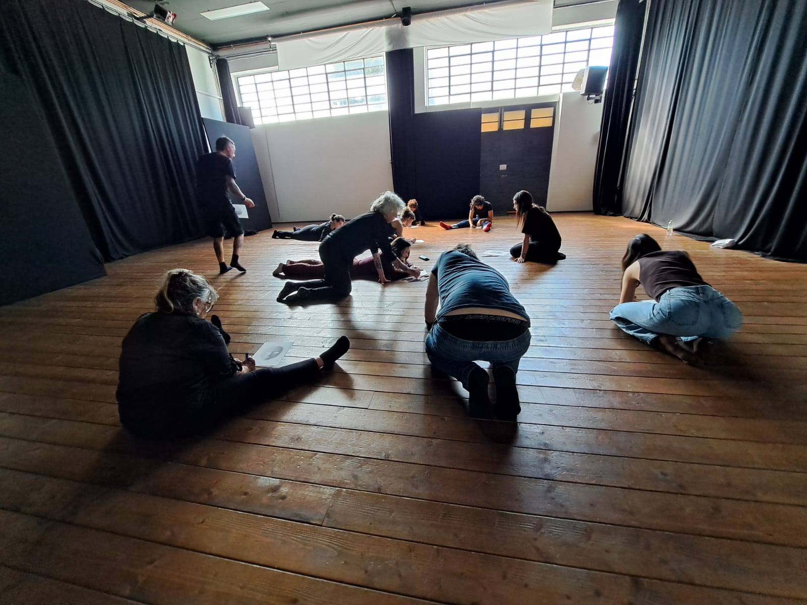
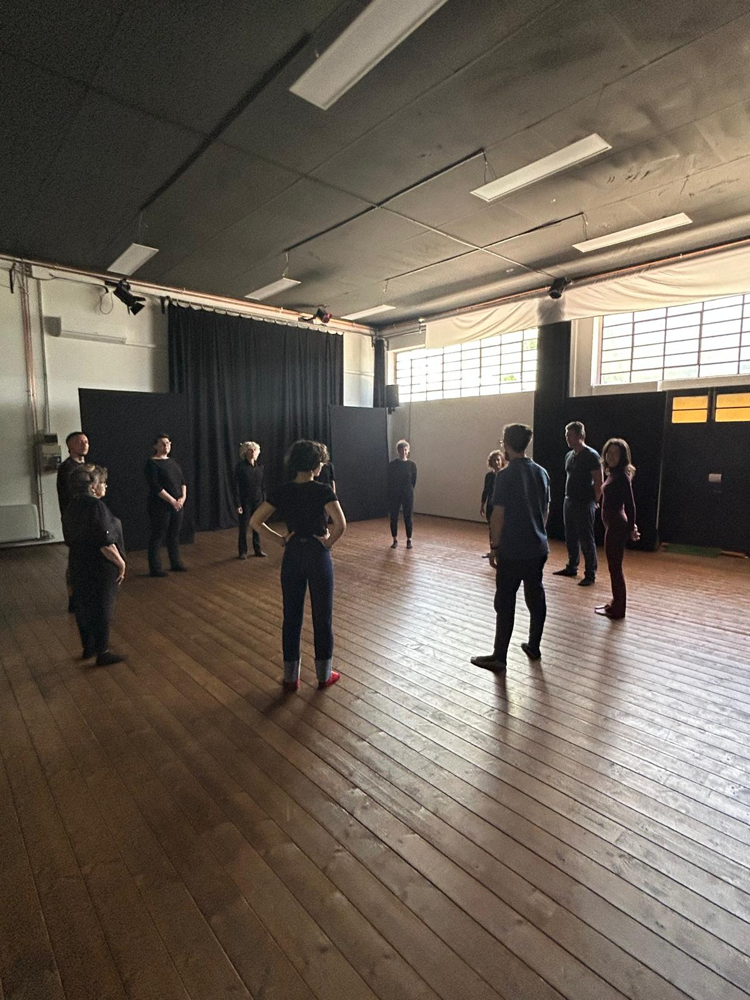
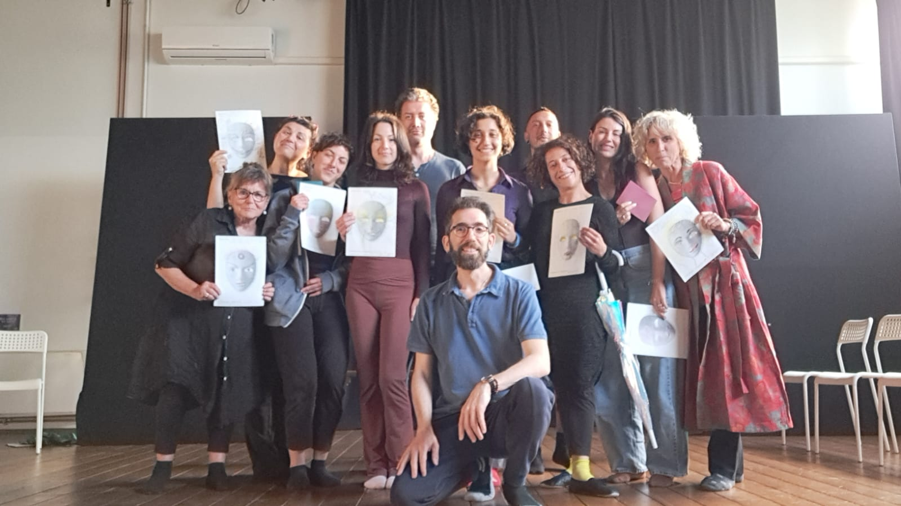
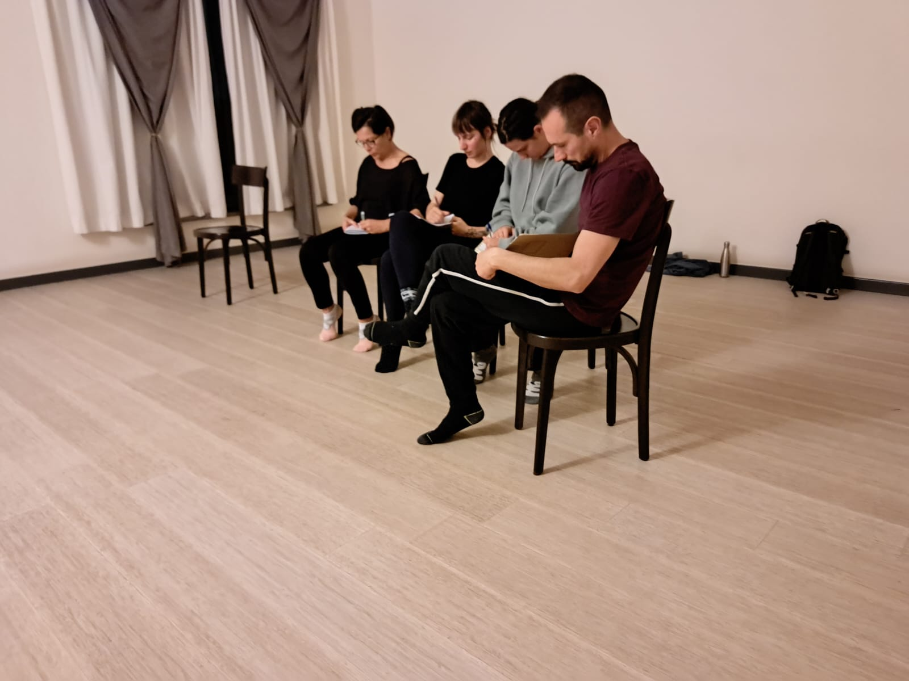
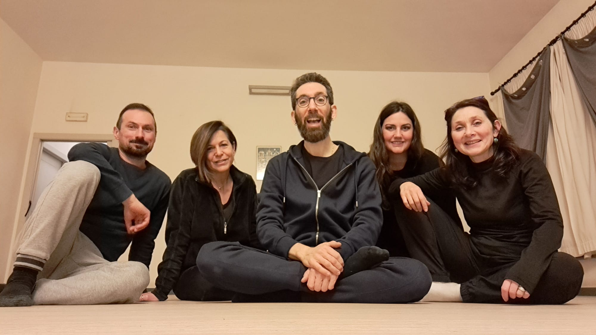
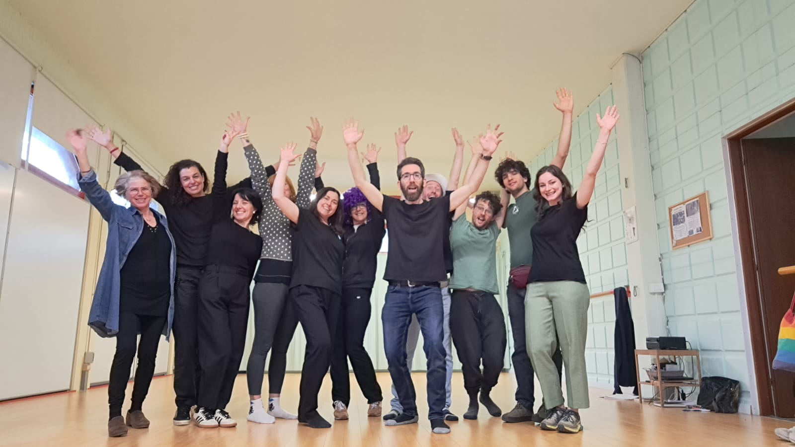
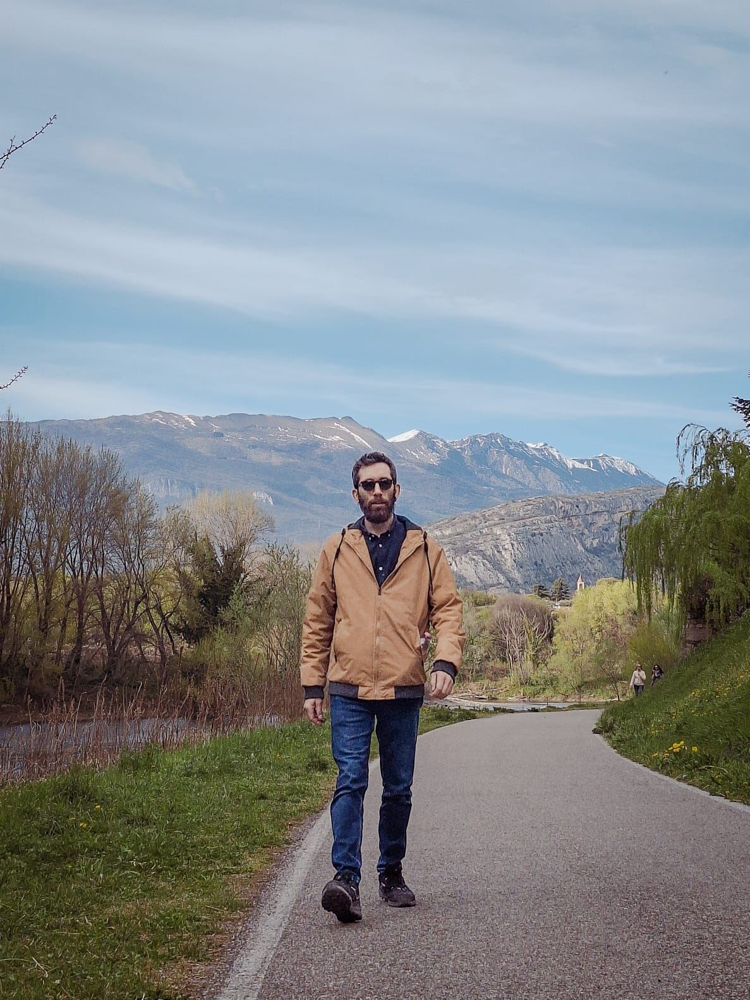

Uso il teatro come specchio. Per conoscerti, sceglierti.
Attraverso pratiche teatrali e l'esperienza nel corpo, lavoriamo insieme per prendere in mano la propria vita e affrontare le proprie sfide con presenza e consapevolezza.
Scopri i laboratori →
Due percorsi
Per chi vuole conoscersi più a fondo
Laboratori aperti a chiunque voglia usare il teatro come strumento di indagine interiore. Non serve esperienza — serve voglia di andare a fondo.
Vedi i laboratori →
Per aziende e gruppi organizzati
Laboratori su relazioni, comunicazione e presenza per team di lavoro. Il teatro come spazio concreto dove le persone si incontrano davvero.
Scopri i progetti →
Prossimi laboratori
Aperto al pubblico
"Io"... chi?
Le maschere che indossiamo ogni giorno, senza saperlo.
6 giugno · Verona
Percorso continuativo
Pratiche teatrali di lavoro su di sé
Lunedì sera, da gennaio a maggio.
Prossima edizione: gen 2027
In arrivo
Nuovo laboratorio
Presto disponibile.
"Il corpo sa già la strada. A volte basta dargli il permesso di percorrerla."
Paolo Frigo
Laboratori aperti al pubblico
Esperienze teatrali per conoscerti più a fondo.
Non serve esperienza teatrale. Serve voglia di osservarsi, di mettersi in gioco, di andare a fondo.






Laboratorio di una giornata · Percorso
"Io"... chi?
6 giugno 2026 · Verona · 70 €
Un laboratorio sulla frammentazione dell'io e le maschere quotidiane. Attraverso pratiche teatrali e l'esperienza nel corpo, riconosciamo i personaggi che ci abitano e impariamo a osservarli con consapevolezza.
Scopri e iscriviti →
Percorso continuativo · 17 incontri
Pratiche teatrali di lavoro su di sé
Prossima edizione: gennaio 2027
Un percorso lungo per chi vuole usare il teatro come strumento di conoscenza e trasformazione personale. Lunedì sera, da gennaio a maggio. Meccanicità, maschere, emozioni, presenza.
Scopri il percorso →
← Laboratori
Laboratorio aperto al pubblico
"Io"... chi?
Un laboratorio teatrale sulla frammentazione dell'io e le maschere quotidiane. Solo scoprendo chi "non siamo" possiamo avvicinarci a chi siamo veramente.
Prenota il tuo posto →
Il laboratorio
"Siamo esseri meccanici. Veniamo trasportati nel mondo dai nostri automatismi, dalle posture e dalle abitudini."
Attraverso pratiche teatrali e l'esperienza nel corpo, partiremo da noi stessi per accogliere e riconoscere le nostre maschere. Sperimentando diversi modi di essere, fare e stare, vivremo — in presenza — alcuni dei nostri personaggi, così da aumentare la nostra consapevolezza.
Cosa faremo
Centratura
Introduzione e lavoro individuale su "chi sono io?" e sulla maschera scelta.
Teatro Immagine
Sviluppo del tema in cerchio attraverso sculture corporee e improvvisazione.
Scena
Lavoro con la maschera in scena, creazioni e rielaborazione collettiva.
Date e informazioni
Data
Sabato 6 giugno 2026
Orario
15:00 — 19:00
Luogo
Il Giardino dei Sogni · Corrubbio (VR)
Costo
70 € — include 2 online
Inclusi: incontro online di presentazione mer 3 giugno e incontro di feedback mer 10 giugno. Posti: massimo 15. Abbigliamento comodo consigliato.
Prenota il tuo posto.
Massimo 15 partecipanti. Anticipo di 30 € alla prenotazione, saldo il giorno del laboratorio.
Iscriviti →
← Laboratori
Percorso continuativo · 17 incontri
Pratiche teatrali di lavoro su di sé.
Un percorso lungo per chi vuole usare il teatro come strumento di conoscenza e trasformazione personale. Lunedì sera, da gennaio a maggio.
Informazioni →
Il percorso
"Partendo dal corpo si possono esplorare posture e abitudini, situazioni che fanno emergere difficoltà, meccanicità e talenti."
Nello spazio protetto del gruppo, esploreremo attraverso il teatro i temi fondanti del lavoro su di sé: la meccanicità e la presenza, la frammentazione dell'io, le maschere, la legge dello specchio. Ognuno lavorerà su di sé partendo dai propri meccanismi.
Informazioni pratiche
Quando
Lunedì, 20:15 — 22:30
Dove
Centro Culturale Thirtha, Pescantina
Durata
17 incontri · gen — mag
Costo
300 € (inclusa tessera)
Prossima edizione: gennaio 2027.
Scrivimi per essere tra i primi a ricevere informazioni.
Contattami →
Per aziende e gruppi organizzati
Il teatro come spazio in cui le persone si incontrano davvero.
Porto laboratori teatrali a team aziendali, cooperative, associazioni e gruppi di lavoro. Non esercizi teorici — esperienze concrete in cui le persone si incontrano con il corpo e con la presenza.
Non sono laboratori di team building. Pongono una base solida di apertura, fiducia e collaborazione autentica tra le persone.
Perché il teatro
"La voce, lo sguardo, il respiro, il movimento: tutto parla prima ancora che apriamo la bocca."
Il teatro è uno strumento antico e potente per lavorare sulle relazioni umane. Nei laboratori che conduco, il corpo viene prima delle parole. Questo permette di accedere a dinamiche autentiche — quelle che nelle riunioni restano non dette.
Ogni laboratorio è adattabile nelle tempistiche secondo le esigenze della tua organizzazione. Non è richiesta alcuna esperienza teatrale.
Conduce Paolo Frigo — laureato in Scienze e Tecniche delle Arti e dello Spettacolo, specializzato in Teatro Sociale e nelle tecniche di Teatro dell'Oppresso.
I laboratori
Relazioni · Legami · Ascolto
La Stessa Strada
Costruire relazioni nei gruppi di lavoro
Uno spazio per incontrarsi davvero. Il teatro per andare oltre la superficie e scoprire, in chi ci sta di fronte, la stessa umanità.
Scopri il laboratorio →
Conflitto · Dialogo · Trasformazione
Dall'Altra Parte
Il conflitto nei gruppi di lavoro
Quando il dialogo manca, le tensioni si accumulano in silenzio. Questo laboratorio trasforma il conflitto in potenziale creativo.
Scopri il laboratorio →
Presenza · Comunicazione · Leadership
Stare
Presenza, comunicazione e leadership personale
Comunicare bene non è una questione di tecnica. È una questione di presenza. Queste non sono qualità innate — si allenano.
Scopri il laboratorio →
Come funziona
01
Mi contatti
Raccontami il tuo gruppo e le esigenze. Definiremo insieme il laboratorio più adatto.
02
Progettiamo
Ogni proposta è adattabile nelle tempistiche. Concordiamo data, spazio e logistica.
03
Facciamo
4 ore di lavoro vivo, con il corpo e con la presenza. Materiali a carico del formatore.
Portiamo questo lavoro nel tuo gruppo.
Scrivimi per parlare del tuo contesto e trovare il laboratorio più adatto.
Contattami →
← Per le aziende
Laboratorio per aziende e gruppi
La Stessa Strada
Nei gruppi di lavoro le relazioni restano spesso in superficie, perché non c'è mai stato uno spazio per incontrarsi davvero. Questo laboratorio è quello spazio.
Richiedi informazioni →
Il problema che affronta
"Nel gruppo ognuno diventa specchio per l'altro. Andando oltre la superficie si scopre, in chi ci sta di fronte, la stessa umanità."
Uso il teatro come strumento per lavorare sulle relazioni nei gruppi. Non esercizi teorici, non discussioni: situazioni in cui le persone si incontrano davvero, con il corpo e con la presenza.
Cosa portano a casa
Qualità di presenza
Una diversa qualità di presenza con i colleghi, più autentica e consapevole.
Ascolto
Una maggiore capacità di ascolto, di sé e degli altri.
Apertura reale
Un'esperienza concreta di cosa significa mettersi davvero nei panni dell'altro.
Informazioni pratiche
Durata
4 ore
Partecipanti
6 — 16 persone
Esperienza richiesta
Nessuna
Tariffa
600 €
Portiamo questo lavoro nel tuo gruppo.
Ogni proposta è adattabile nelle tempistiche secondo le esigenze della tua organizzazione.
Scrivimi →
← Per le aziende
Laboratorio per aziende e gruppi
Dall'Altra Parte
Nei gruppi di lavoro capita che le relazioni si inceppino, che la comunicazione si faccia difficile, che qualcosa resti non detto. Nel conflitto risiede un potenziale creativo. Questo laboratorio lo trasforma.
Richiedi informazioni →
Il problema che affronta
"Quando il dialogo manca, l'energia del gruppo si disperde e le tensioni si accumulano in silenzio."
Questo laboratorio lavora sul dialogo e sulla capacità di considerare lo sguardo dell'altro, prima che le tensioni esplodano. Attraverso il corpo, dinamiche di gruppo ed improvvisazioni, i partecipanti imparano a riconoscere i segnali del conflitto.
Come funziona
01
Corpo e gioco
Si parte dal corpo per creare un clima disteso e collaborativo.
02
Teatro Immagine
Sculture corporee e oggetti animati per dare forma a idee ed emozioni.
03
CNV
La Comunicazione Non Violenta come strumento pratico per nominare il conflitto.
04
Cerchio
Si chiude con un cerchio di dialogo e condivisione collettiva.
Cosa portano a casa
Riconoscere i segnaliUna maggiore capacità di riconoscere il conflitto prima che esploda.
Strumento concretoLa CNV per esprimere i propri bisogni in modo chiaro e non aggressivo.
Cambio di prospettivaIl conflitto non come problema da evitare, ma come segnale che qualcosa vuole cambiare.
Informazioni pratiche
Durata
4 ore
Partecipanti
6 — 16 persone
Esperienza richiesta
Nessuna
Tariffa
600 €
Trasformiamo le tensioni in risorsa.
Ogni proposta è adattabile nelle tempistiche secondo le esigenze della tua organizzazione.
Scrivimi
← Per le aziende
Laboratorio per aziende · Presenza, comunicazione, leadership
Stare
Comunicare bene non è una questione di tecnica. È una questione di presenza. Chi comunica con efficacia è centrato, chiaro, calmo. Queste non sono qualità innate — si allenano.
Richiedi informazioni →
L'approccio
Uso il teatro come palestra della presenza.
La voce, lo sguardo, il respiro, il movimento: tutto parla prima ancora che apriamo la bocca. Lavorando sul corpo si lavora sulla comunicazione, in modo diretto e concreto.
Il percorso
Centratura
Ognuno entra in contatto con sé stesso e con la stanza.
Movimento
Gioco e presentazione per scoprire le versioni di sé già esistenti.
Teatro Immagine
Sculture di gruppo e improvvisazioni sul tema della presenza.
Scrittura
Si fissa sulla carta ciò che è emerso dall'esperienza.
Cerchio
Condivisione collettiva di quello che il corpo ha già capito.
Cosa portano a casa
01
Consapevolezza
Una maggiore consapevolezza del proprio modo di stare, muoversi e comunicare.
02
Presenza
La capacità di essere presenti senza essere agitati.
03
Leadership
Uno sguardo chiaro su cosa significa leadership personale, al di là di ruoli e gerarchie.
Informazioni pratiche
Durata
4 ore
Partecipanti
6 — 16 persone
Esperienza richiesta
Nessuna
Tariffa
600 €
Portiamo la presenza nel tuo team.
Scrivimi

Chi sono
Paolo Frigo
Formatore teatrale & Regista
Laureato in Scienze e Tecniche delle Arti e dello Spettacolo, mi sono specializzato in Teatro Sociale, immergendomi nelle tecniche di Teatro dell'Oppresso.
Grande appassionato di musica e scrittura, ho militato in diversi progetti musicali e inciso un disco come cantautore. A novembre 2024 ho debuttato come regista con lo spettacolo "Insogna".
Nella mia professione di formatore, fondo la ricerca interiore dell'essere umano e il lavoro su di sé con il potere trasformativo del teatro.
Il mio approccio
"Fondo la ricerca interiore e il lavoro su di sé con il potere trasformativo del teatro."
Questo lavoro parte dalla mia formazione in teatro sociale e nel tempo ha inglobato il lavoro su di sé come individuo. Attraverso gli strumenti teatrali creo limiti e obiettivi concreti per osservarci, ascoltarci, mettere in discussione. Sciogliere e tornare a sé stessi.
Formazione e percorso
Formazione
Scienze e Tecniche delle Arti e dello Spettacolo
Specializzazione
Teatro Sociale & Teatro dell'Oppresso
Regia
"Insogna" — novembre 2024
[foto di laboratorio]
"Il gruppo ci sostiene e ci fa da specchio. Ci dà la possibilità di metterci nei panni degli altri."
Dal lavoro in laboratorio
Scrivimi
Parliamo del tuo progetto.
Che tu voglia partecipare a un laboratorio o portare un percorso nella tua organizzazione, scrivimi. Rispondo entro 48 ore.